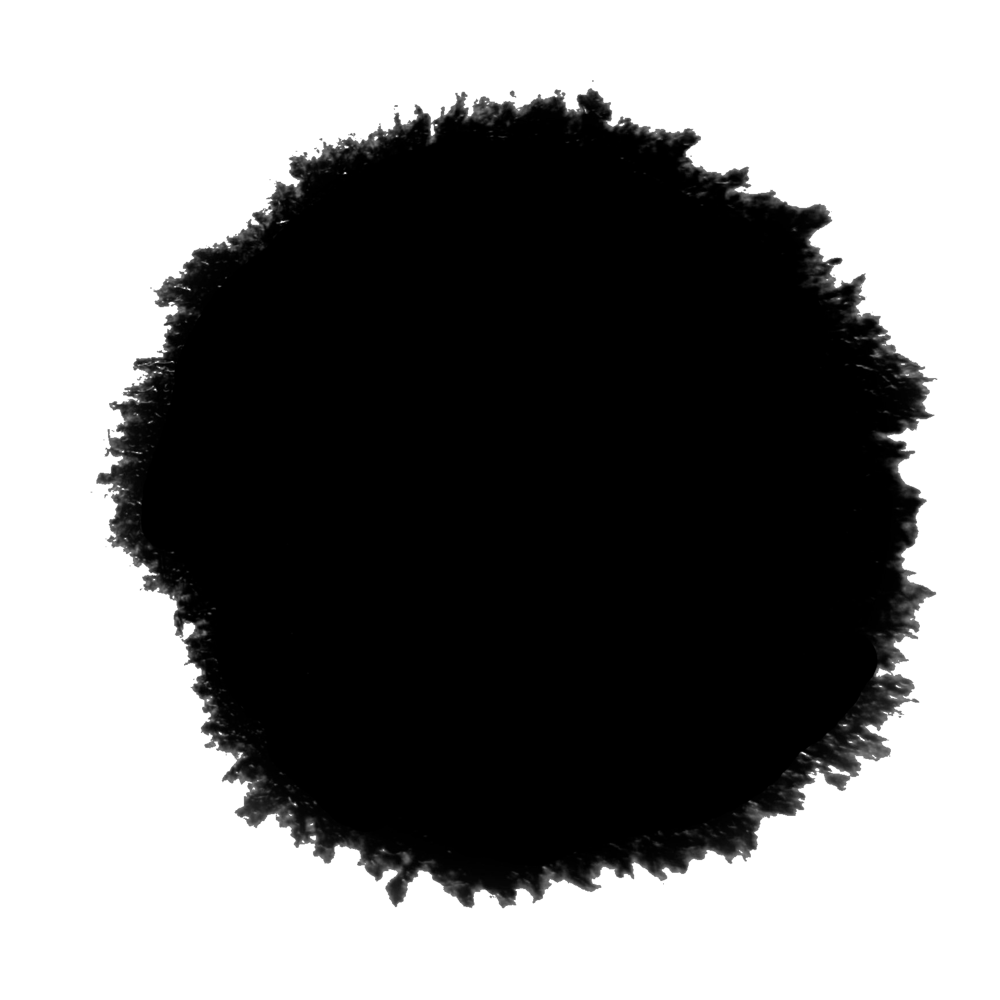

<!--   *********************************** -->
<!--         Componente Mapa General       -->
<!--   *********************************** -->


    <!-- Fondo Mapa -->
    <div id="contenedorMapa" #canvasMapa class="bordeDesarrollador">

        <!--  -->

        <pinch-zoom  id="pinch-zoom" [ngClass]="{'niebla': mostrarNiebla}" [limitPan]="false" [minPanScale]="1" [limit-zoom]="10">

            <!-- Mapa Global -->
            <div *ngIf="mapaGeneralService.estadoInmap=='global'" class="contenedorMapaGlobal">

                <div class="contenedorMascara">
                
                </div>

                <div class="contenedorMarcadoresZonas">
                    <div class="aspect-ratio">
                    <div class="zona zona1 pulsacion" (click)="mapaGeneralService.seleccionarZona('Asfaloth');"></div>
                    </div>
                </div>

            </div>

            <!-- Mapa Isometrico -->
            <div *ngIf="mapaGeneralService.estadoInmap=='isometrico'" [style.transform]="'scale('+escalaMapaIsometrico+','+escalaMapaIsometrico+')'" class="contenedorMapaIsometrico">

            <div class="wrapper">

               <div class="floor">

                  <div class="players">
                     <!-- player 1 -->
                     <div class="player blue" data-name="joe">
                        <div class="right"></div>
                        <div class="front">
                           <div class="top"></div>
                        </div>
                     </div>
                     
                  </div>
                  <!-- Data Cords are for Future use -->
                
                     <div *ngFor="let fila of this.mapaGeneralService.region.isometrico;let i = index" class="row">
                         <div *ngFor="let tile of this.mapaGeneralService.region.isometrico[i];let j = index" data-cords='[i,j]' class="tile" [ngClass]="renderTile(i,j)" (click)="clickTile(i,j,$event)" (auxclick)="clickTileAux(i,j,$event)" >
                            <div [ngClass]="renderTile(i,j)" class="marcador"></div>
                            
                            
                         </div> 
                     </div>

                  </div> 
                </div>
            </div>

            <div class="fogwrapper">
            </div> 

        </pinch-zoom>

            <div class="fogwrapper">
                <div id="foglayer_01" class="fog">
                  <div class="image01"></div>
                  <div class="image02"></div>
                </div>
                <div id="foglayer_02" class="fog">
                  <div class="image01"></div>
                  <div class="image02"></div>
                </div>
                <div id="foglayer_03" class="fog">
                  <div class="image01"></div>
                  <div class="image02"></div>
                </div> 
            </div> 
    </div>


